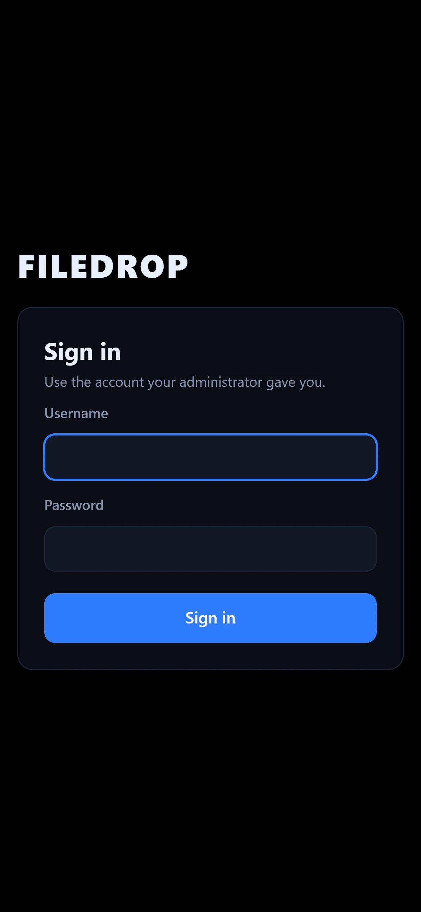

Setup guide
From install to the first upload in about five minutes.
1. Install FileDrop
Download and run the installer from the download page. FileDrop opens its admin window when it's done. Closing that window keeps FileDrop running in the system tray; right-click the tray icon and choose Quit FileDrop to stop it.
2. Choose where files are saved
The first time, FileDrop asks where to store uploaded files. Click Browse and pick a drive with plenty of space. If the folder already has other things in it, FileDrop creates a FileDrop Files folder inside it so nothing gets mixed up.
Files are stored under internal ID names, not their real names, so they can't clash or break. To move everything to another drive later, use Dashboard → Storage → Change folder.
3. Add people
Go to Users → Add user. Choose a username and display name; FileDrop suggests a temporary password. Give those to the person. They choose their own password the first time they sign in.

FileDrop Free includes up to 5 accounts. You can set a storage limit for each person, suspend an account at any time or reset a password.
4. Connect a phone
- Make sure the phone and the PC are on the same Wi-Fi, or that the PC is connected to the phone's hotspot.
- On the PC, open the Dashboard. Scan the QR code with the phone's camera, or type the link shown under it (it starts with
https://). - Sign in with the username and temporary password, then choose a new password.
- Tap Upload files.

Tip: if someone types just the PC's address without https://, FileDrop shows a help page with a button to the secure link.
5. The one-time "not private" warning
FileDrop encrypts connections with HTTPS, using a certificate it creates on your PC. Phones don't recognize who made that certificate, so the first time they show a warning. That's expected.
- iPhone (Safari): tap Show Details, then visit this website, then Visit Website.
- Android (Chrome): tap Advanced, then Proceed.
- Windows or Mac browsers: choose Advanced, then Continue.
The warning only comes back if the PC's network address changes (for example, switching from home Wi-Fi to a hotspot) or about once a year when the certificate renews. The Dashboard shows the certificate fingerprint if you want to compare it with what the phone shows.
On your own trusted network only, you can turn off HTTPS in the Dashboard to avoid the warning. Without HTTPS, others on the same network could see passwords and files as they travel, so leave it on for shared, school or public Wi-Fi.
6. Shared folders
Go to Shared folders → New shared folder, then choose each person's access:
- View: see and download.
- Upload: also add files and folders, and change or delete only what they added.
- Manage: change or delete anything in the folder.

Troubleshooting
The phone can't open the link
- Check that both devices are on the same network. Guest Wi-Fi networks often block devices from seeing each other.
- Check that the address on the Dashboard matches the one you typed. If the PC changed networks, click Stop web server and then Start web server.
- If you didn't use the installer, Windows may have asked whether to allow FileDrop on the network. Allow it for Private and Public networks, or set your network to Private in Windows Settings.
Uploads from iPhone take a while to start
When you pick many photos, iOS prepares each one first, downloading originals from iCloud or converting formats. FileDrop starts uploading as soon as iOS hands the files over. Smaller batches start sooner.
I forgot the admin PIN
Quit FileDrop from the tray, then start it once from a terminal with:
FileDrop.exe --reset-admin-pin